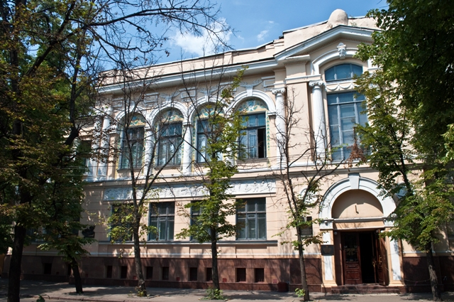
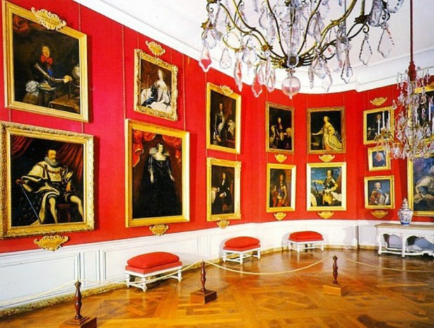

Художники Харькова
|
Экскурсионная программа М. Васильковский, могила художника в Молодежном парке, украинский стиль, росписи Самокиша. Дом художника А. Шевченко на ул. Рымарской. Школа М.Д. Раевской – Ивановой. Могила художника М. Ткаченко на 13 кладбище. Возможно посещение Художественного музея, действующих выставок, участие в мастер-классах по народным промыслам и hand made. Длительность тура - 4 часа Транспорт - Автобус |
 |
|  | Переход на главную Ознакомиться с ценами можно здесь Вернуться к списку экскурсий |